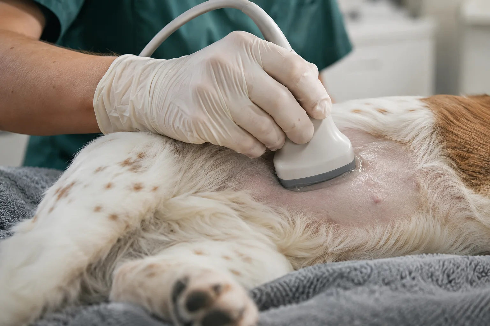
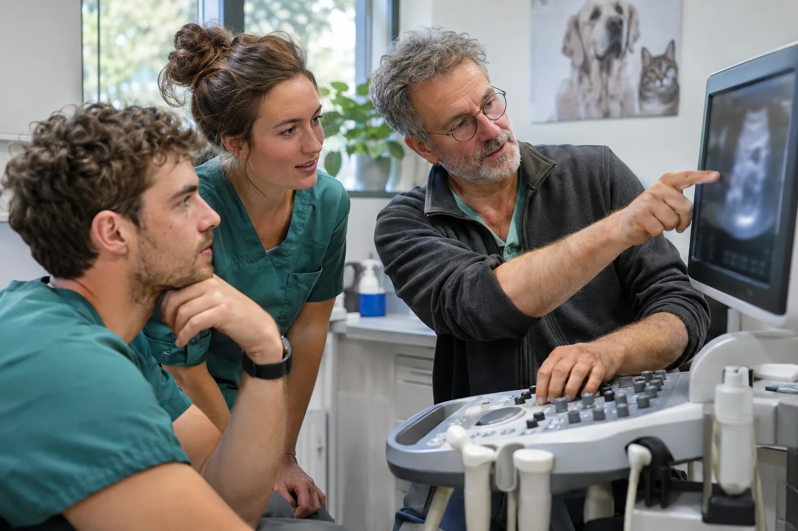
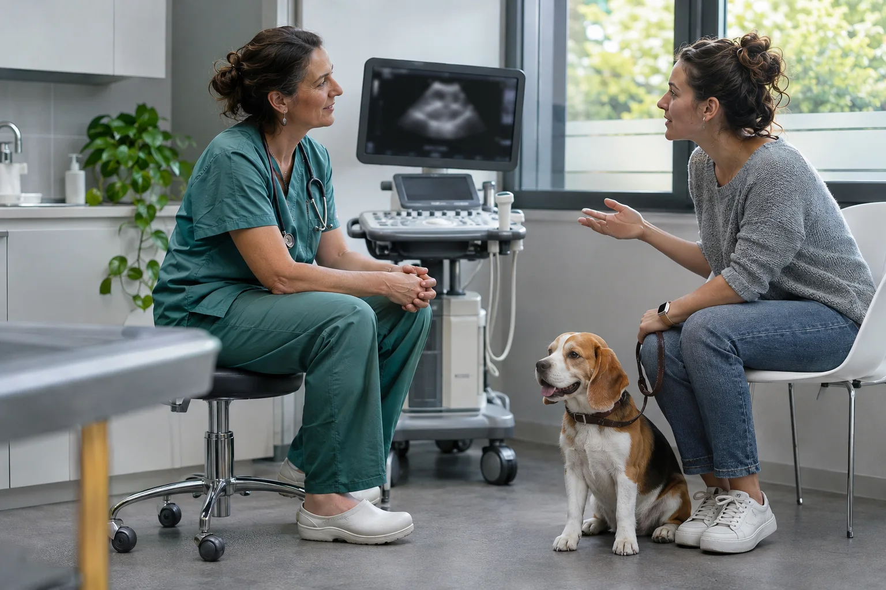

Ultrasonography
What ultrasound shows, and why it pays off
Ultrasound imaging, also called sonography, directs high-frequency sound waves at part of the body to produce pictures of what is inside. It uses no ionizing radiation (x-rays). Because the images are captured in real time, they show the structure and movement of internal organs and the blood flowing through vessels. An examination can be performed with minimal restraint or sedation.
What an abdominal scan shows
Abdominal ultrasound is used to evaluate the:
- kidneys
- liver
- gallbladder
- pancreas
- spleen
- blood vessels of the abdomen
Veterinarians also use ultrasound to guide a fine needle to diseased tissue for a biopsy.
What it helps diagnose
- abdominal pain
- pancreatitis
- an enlarged abdominal organ
- stones in the kidney or bladder
- portosystemic shunts
In a needle biopsy, a sample of cells is taken from an organ for laboratory testing.

Is ultrasound worth it?
In recent years, ultrasound has become standard in veterinary practice. These are the main reasons practices invest in it:
- advances in the technology
- prices that veterinarians and pet owners can afford
- lower diagnostic costs
- new diagnostic applications and specialty niches
- a larger referral network
How far the technology has come
Today’s veterinary ultrasound systems are easier to use and offer higher resolution and better image contrast. We can now reliably see smaller organs and make out subtler lesions, so diagnosis is quicker and easier than anyone could have imagined 5 years ago. Automatic image optimization spares veterinarians and veterinary technicians tedious adjustments, so they can concentrate on a faster, more accurate diagnosis.
What a system costs
A veterinary ultrasound system with a basic set of probes costs $18,000 to $30,000 on average. The price depends on whether the system is portable or a console, on the number and variety of probes, and on software features such as real-time, on-board coaching modules.
That is a serious outlay, and many veterinarians hesitate over it. Recent data from the University of Illinois and the American Animal Hospital Association (AAHA) show, however, that ultrasound brings in revenue straight away for most practices.
What an examination earns
The billing rate depends on the procedure, but even on conservative estimates ultrasound is an immediate source of income for most veterinary practices. The AAHA analyzed data from 2015 and calculated these average billing rates for abdominal exams:
- $275 in urban areas
- $231 in towns
- $121 in rural areas
A more recent study by the University of Illinois at Urbana-Champaign, College of Veterinary Medicine, estimated the average cost of an abdominal exam in 2016–2017 at $260. This does not include revenue from other ultrasound procedures such as pregnancy exams, echocardiography, and cystocentesis.
At that equipment cost, a practice typically needs 5–6 procedures a month to break even.
Growing the practice
More clients through word of mouth
Pet owners trust a veterinarian who works with the most advanced methods. Ultrasound has so many applications that you will have plenty of chances to explain how it works and what it does for their animal. Satisfied clients recommend the practice to friends, family and colleagues.
Specialized niches
Ultrasound is essential in zoo and marine animal care, equine care and ruminant care. With a portable system, you can offer your services in these niches too.
The bottom line
For most veterinarians, ultrasound raises revenue straight away, and even on conservative estimates the equipment is a sound investment. A practice that offers ultrasound gains new revenue streams as well as loyal clients and referrals.


Find the right scanner for your practice
Tell us what you examine and how you work. We reply within 48 hours.
Request a quote